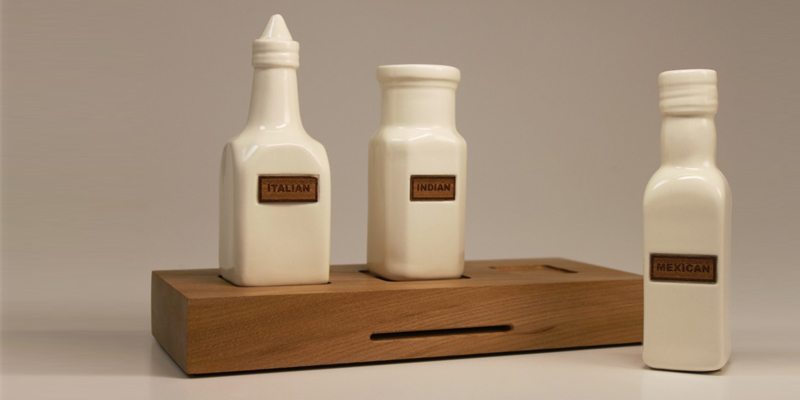

This quirky little product delves into an aspect of dining which is often overlooked. In toda's society food has to taste sensational and look exciting, however sound is not regularly incorporated in the dining experience. This product was developed to stimulate that forgotten sense while eating and create another delightful experience in the home or out. The product consists of three condiments, Italian, Mexican and Indian which provide an authentic background sound for what the user is eating. This therefore designs a new and frequently forgotten experience aimed at food.